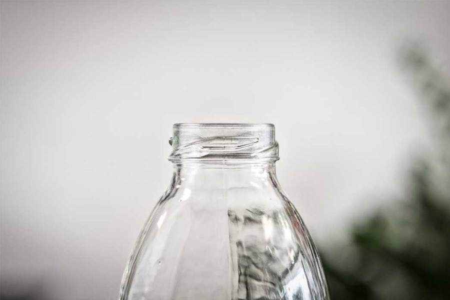

Чи є життя без одноразових речей?
Ми живемо в світі одноразових речей, які завдають значної шкоди навколишньому середовищу. Використання багаторазових речей допоможуть вам зменшити кількість сміття і заощадити гроші.
Список одноразових речей, які можна замінити на багаторазові.
- Одноразові целофанові пакети
- Одноразові пляшки і стаканчики
- Одноразовий посуд і трубочки для напоїв
- Oдноразові ручки
- Oдноразові бритви
- Гелі для душу, рідке мило та інше в пляшках
- Одноразові форми для випікання
- Чай у пакетиках
- Губки для миття посуду
- Ватні палички на пластиковій основі
Замість целофанових пакетів можна використовувати багаторазову еко-сумку з бавовняної тканини, вони довговічні, стираються в пральній машині і їх можна навіть пошити самостійно. Замість маленьких прозорих пакетиків для овочів і фруктів використовуйте тканинні мішечки. Капусту, огірки, банани, кавуни і дині, лимон, зелень - ці продукти можна прекрасно донести до будинку без додаткової упаковки у вигляді пакетиків або харчової плівки.
Пляшки можна замінити на спеціальні багаторазові, виготовлені з нержавіючої сталі або термос, який відмінно зберігає температуру напою. Влітку рідина залишається прохолодною, на відміну від зазвичайної пляшки, а взимку - теплою. Додому можна замовляти чисту воду у великих ємностях, які привозять спеціальні служби, ці ємності вони потім використовують кілька разів.
Замініть одноразовий пластиковий посуд на багаторазовий, що не б'ється для пікніків і поїздок, наприклад складні похідні набори з нержавіючої сталі або з щільного пластику. Так, такий посуд необхідно мити, але проте, він не шкодить природі. Трубочки так само можна замінити багаторазовими аналогами з бамбука або нержавіючої сталі, зазвичай, в комплекті з такими трубочками є спеціальний йоржик для їх чистки.
Краще не купувати ручки, в яких не можна замінити стрижень. Практично в будь-якому канцелярському магазині можна придбати стрижні для ручок, які коштують дуже дешево. Найбільш вдалою заміною ручці є простий олівець, оскільки, частіше за все, основа складається з чистої деревини без домішок пластика. Також є авто-олівці, їх основа з пластика, в якому знаходяться змінні грифелі.
Замість одноразових бритв слід віддати перевагу багаторазовим зі змінними картриджами або станку з лезами. Крім цього, зараз існує велика кількість аналогів гоління, які є більш екологічними, наприклад шугарінг або епіляція.
Зараз існує безліч альтернатив рідким засобам гігієни в пляшках. Можна купувати брускове мило, шампуні так само існують у твердій формі. А також, найчастіше такі засоби відрізняються більш чистим складом, в порівнянні зі звичним аналогами.
Для випікання краще використовувати багаторазові силіконові форми або форми з жароміцного металу, такі форми довговічні. Замість пергаментного паперу бажано використовувати багаторазовий силіконовий або тефлоновий килимок для випікання. Кондитерські мішки з целофану, також можна замінити на силіконові.
Пакетики для чаю не в повному обсязі складаються з паперу, в них присутній пластик. Краще віддати перевагу ваговому розсипному чаю, а якщо не любите чаїнки можна купити ситечко.
Губки не піддаються переробці, вбирають в себе мікроби, а також є джерелом мікропластіка, який з водою потрапляє в організм. Губку можна замінити дерев'яної щіткою для миття посуду або використовувати натуральну губку з люфи - рослини, яка повністю піддається переробці.
Існують аналоги пластиковій основі - палочки з бамбука або деревини. Також, можна вручну накрутити вату на сірник, як робили наші бабусі.